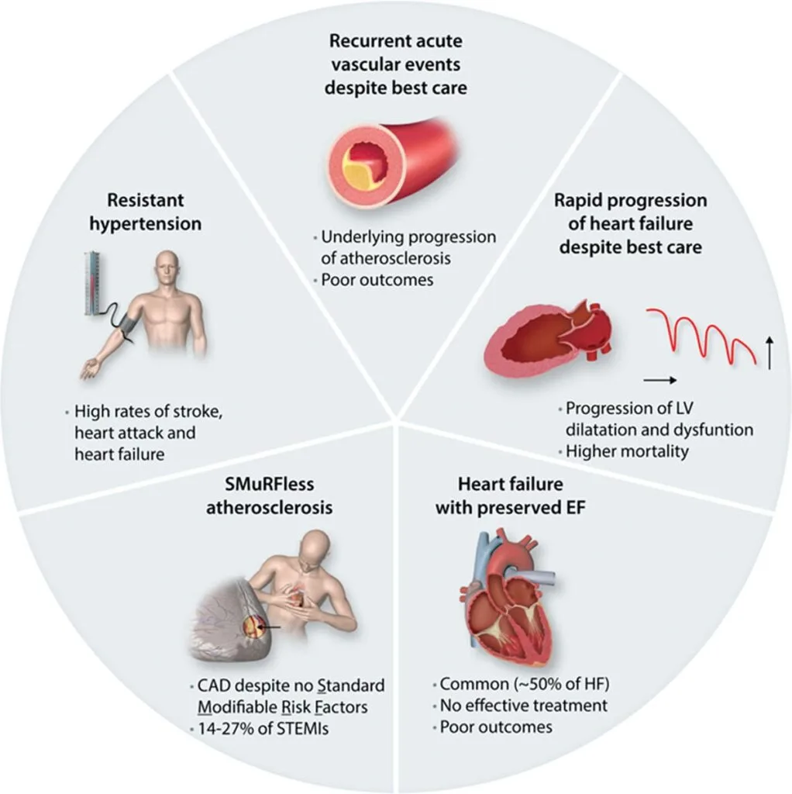

Expanded Nursing Uganda Explanation
Drugs Used in the Treatment of Cardiovascular Disorders should be reviewed through safe maternal and newborn assessment, early recognition of danger signs, respectful communication and timely referral. Connect the definition to vital signs, bleeding, fetal or newborn wellbeing, patient education and local protocol requirements.
01 Drugs Used in the Treatment of Cardiovascular Disorders
These drugs are used in the treatment of conditions such as:
- Hypertension
- Angina pectoris
- Heart failure
- Hyperlipidemia
- Arrhythmias
02 Drugs Used in the Treatment of Hypertension
Hypertension
Hypertension is the persistent elevation of blood pressure higher than normal (140/90 mmHg) .
Common Terms Used in Hypertension
- Blood Pressure : This is the pressure of blood against the walls of the main arteries.
- Diastolic Blood Pressure: This is the pressure exerted in the vessels when the ventricles are relaxing and refilling.
- Systolic Pressure : This is the pressure exerted in the vessels when the ventricles are contracting.
- Orthostatic Hypotension (Postural Hypotension) : This is the decrease in blood pressure that occurs when a person stands erect.
- Peripheral Vascular Resistance: This is the pressure that blood must overcome as it flows in the vessels.
- Isolated Systolic Hypertension: This is defined as systolic blood pressure greater than or equal to 140 mmHg with diastolic blood pressure less than 90 mmHg. It is common in elderly patients.
- Malignant Hypertension: This is a rapidly progressing, potentially fatal form of hypertension with diastolic pressure exceeding 120 mmHg.
- Hypertensive Emergency : This is characterized by severe elevation in blood pressure > 180/120 mmHg complicated by target organ dysfunction. These situations require immediate reduction of blood pressure to limit target organ damage.
- Hypertensive Urgency : This is a situation with severe elevation of blood pressure without target organ dysfunction.
Table 1: Stages of Hypertension
- Category Systolic Diastolic
- Normal < 130 < 80
- High Normal (Pre-hypertension) 130-139 81-89
- Mild Hypertension (Stage I) 140-159 90-99
- Moderate Hypertension (Stage 2) 160-179 100-109
- Severe Hypertension (Stage 3) 180-209 110-119
- Very Severe Hypertension (Stage 4) > 209 > 119
Classification of Hypertension
Hypertension may be classified as:
- Essential (Primary) Hypertension
- Secondary Hypertension
Essential Hypertension
Essential hypertension is the most common type of hypertension, contributing to over 90% of the cases of hypertension encountered in medical practice. The cause of essential hypertension is not known.
Secondary Hypertension
Secondary hypertension is an elevation of blood pressure due to an identifiable cause such as:
- Renal disease
- Drugs like oral contraceptives
- Pre-eclampsia
- Renovascular disease
Treatment is directed at elimination of the cause.
Management of Hypertension
Non-Pharmacological Measures
- Encourage regular exercise (e.g., walking, jogging)
- Advise the patient to lose weight (if overweight)
- Advise the patient to limit alcohol intake
- Advise the patient to restrict salt intake
- Advise the patient to stop smoking
- Encourage a diet high in fruits and vegetables
- Advise the patient to relax and manage stress
- Diet should be low in saturated fats and cholesterol
Note: Non-pharmacological measures may be employed alone in pre-hypertension or in combination with drugs in mild to severe hypertension.
Drugs used in the treatment of hypertension may be classified as follows:
- Beta blockers
- ACE inhibitors
- Alpha-II blockers
- Diuretics
- Centrally acting antihypertensives
- Calcium channel blockers
- Angiotensin II antagonists
- Direct vasodilators
Table 2: Choice of Antihypertensives in Different Conditions
- Comorbid Disease Drugs Recommended
- Diabetes mellitus Calcium channel blockers, ACE inhibitors
- Congestive heart failure Diuretics, ACE inhibitors
- Angina pectoris Beta blockers, calcium channel blockers, ACE inhibitors, and diuretics as alternative
- Asthma, chronic pulmonary disease Calcium channel blockers, diuretics, and ACE inhibitors
- Hyperlipidemia ACE inhibitors, calcium channel blockers
- Previous myocardial infarction Beta blockers, calcium channel blockers, ACE inhibitors, and diuretics
- Chronic renal disease Diuretics, calcium channel blockers, beta blockers, and ACE inhibitors
These drugs are recommended in the treatment of hypertension, angina pectoris, and post-myocardial infarction.
Beta blockers are classified as follows:
Non-selective beta blockers
- Propranolol
- Sotalol
Selective beta-1 blockers
- Atenolol
- Bisoprolol
- Metoprolol
Alpha and beta blockers
- Carvedilol
- Labetalol
Mode of Action
Beta blockers competitively block the response to beta receptors, resulting in a decrease in heart rate and heart contractility, thereby lowering blood pressure.
Atenolol
Available Preparations:
- Tablets : 25 mg, 50 mg, 100 mg
Available Brands : Tenormin®, Totamol®, Velorin®, Atelor®, Betagard®, Cardinol®, Tensimin®
Combinations :
- Tenoret® (Atenolol/Chlorthalidone) 50/12.5 mg
- Tenoretic® (Atenolol/Chlorthalidone) 100/25 mg
Pharmacokinetics
About half of the dose is absorbed following oral administration, crosses the placenta, and is distributed into breast milk. Atenolol undergoes little or no hepatic metabolism and is excreted unchanged in the urine.
Indications
- Hypertension
- Angina pectoris
- Cardiac arrhythmias
- Prophylaxis in migraine
- Acute myocardial infarction
Contraindications
- Hypersensitivity to atenolol
- Sinus bradycardia
- Second and third-degree heart block
- Symptomatic heart failure
Dosage
- Hypertension : 25-100 mg once daily (100 mg is only slightly better than 50 mg)
- Angina : 100 mg once daily or 50 mg twice daily
- Arrhythmias : 50-100 mg daily
- Migraine Prophylaxis : 50-100 mg daily
Side Effects
- Fatigue
- Hypotension
- Impotence
- Muscle ache
- Dizziness
- Wheezing
- Insomnia
Drug Interactions
- Cimetidine may increase atenolol blood concentration
- Diuretics and other antihypertensives may increase the hypotensive effect of atenolol
- Atenolol may mask the symptoms of hypoglycemia and prolong the hypoglycemic effect of insulin and oral hypoglycemics
- NSAIDs may decrease the antihypertensive effects of atenolol
- Alcohol enhances the hypotensive effect of atenolol
- Concurrent use with digoxin increases the risk of AV block and bradycardia
- Oral contraceptives antagonize the hypotensive effect of atenolol
- Concurrent use with verapamil results in severe hypotension and heart failure
Key Issues to Note
- Atenolol should be used with caution in patients with diabetes since it may mask symptoms of hypoglycemia
- Atenolol may be administered with or without food
- Abrupt withdrawal of the drug should be avoided; it should be discontinued over 1-2 weeks through gradual reduction of the dose
These drugs are used in the treatment of hypertension and angina pectoris and are safe for patients with asthma, hyperlipidemia, diabetes, and renal dysfunction. They are subdivided into two groups:
- Dihydropyridines
- Non-dihydropyridines
Dihydropyridines : Drugs in this group produce significant blockage of calcium channels in blood vessels and minimal in the heart.
Examples:
- Nifedipine
- Amlodipine
- Felodipine
Non-Dihydropyridines : These drugs act on vascular smooth muscle and the heart. Since they suppress AV conduction, they are useful in cardiac arrhythmias.
Examples:
- Verapamil
- Diltiazem
Mode of Action
Calcium channel blockers decrease the influx of calcium into smooth muscles, thereby reducing vascular tone, which results in a reduction of peripheral resistance and blood pressure.
Nifedipine
Available Preparations:
- Tablets : 10 mg, 20 mg retard, 30 mg long-acting
Available Brands : Adalat®, Nifelat®, Nifedipine-denk®
Pharmacokinetics
Nifedipine is rapidly and almost completely absorbed from the gastrointestinal tract, but bioavailability is reduced by first-pass metabolism. It is extensively metabolized in the liver and excreted in the urine as inactive metabolites.
Indications
- Hypertension
- Prophylaxis of angina pectoris
Contraindications
- Hypersensitivity to nifedipine
- Unstable or acute attacks of angina
- Porphyria
- Cardiogenic shock
Dosage
The dose and frequency of administration vary depending on the preparations used.
- Short-acting nifedipine is given 3 times a day
- Nifedipine retard is given twice daily
- Long-acting nifedipine is given once daily
Hypertension :
- Adults: 10-20 mg twice daily, increased to 20-40 mg twice daily (Nifedipine retard)
- Nifedipine long-acting: 30-90 mg once daily
Angina Pectoris :
- Nifedipine retard: 10-40 mg twice daily or nifedipine long-acting: 30-90 mg once daily
Side Effects
- Oedema of ankle
- Headache
- Flushing
- Dizziness
- Tachycardia
- Palpitations
- Impotence
- Tremors
- Muscle cramps
- Dry mouth
- Constipation
- Nausea
Drug Interactions
- Beta blockers may have additive hypotensive effects when given together with nifedipine
- Nifedipine may increase digoxin blood concentration
- Nifedipine increases the plasma concentration of digoxin
- Rifampicin increases the metabolism of nifedipine, leading to reduced plasma concentrations
Key Issues to Note
- Administer nifedipine with food and swallow sustained-release tablets without chewing
- Advise the patient to avoid alcohol
- Advise the patient to rise slowly from a prolonged sitting or lying position
- Advise the patient not to stop using the drug suddenly
- Inform the patient that excessive hypotension may occur, especially at the beginning of treatment
Amlodipine
Available Preparations:
- Tablets : 5 mg, 10 mg
- Capsules : 5 mg, 2.5 mg
Available Brands: Norvasc®, Amtas®, Asomex®, Amlong®, Lovasc®, Lofral®, Amlodac®, Amedin®
Pharmacokinetics
Amlodipine is well absorbed following oral administration. It is extensively metabolized in the liver and excreted in the urine.
Indications
- Hypertension
- Prophylaxis of angina pectoris
Contraindications
- Unstable angina
- Known hypersensitivity to amlodipine
- Breastfeeding
Dosage
- Hypertension or Angina : Initially 5 mg once daily, increased after 10-14 days to a max of 10 mg once daily if necessary
Side Effects
- Headache
- Dizziness
- Oedema
- Fatigue
- Flushes
- Hypotension
- Malaise
- Bradycardia
- Palpitations
- Taste disturbances
- Abdominal pain
Drug Interactions
- Cimetidine increases serum levels of amlodipine
- Rifampicin may decrease serum concentrations of amlodipine
- Erythromycin may reduce clearance of amlodipine
- Barbiturates reduce plasma concentrations of amlodipine
Key Issues to Note
- Amlodipine may be administered without regard to food but take with caution with grapefruit juice
- Inform the patient not to discontinue the drug abruptly
03 Nursing Uganda Clinical Lens
Use Drugs Used in the Treatment of Cardiovascular Disorders as a practical nursing topic, not only a memorized definition. Read the topic through the safety of two patients: the mother and the fetus or newborn.
- What to understand first: define drugs used in the treatment of cardiovascular disorders, identify the normal or expected pattern, then explain what changes when the patient is unwell.
- Why it matters in care: the nurse must recognize risk early, explain findings clearly, document accurately and know when to escalate.
- How to revise it: connect each point to assessment, nursing diagnosis or care problem, intervention, rationale and evaluation.
04 Assessment Guide
- Maternal vital signs, bleeding, pain, contractions, uterine tone and danger signs.
- Fetal or newborn wellbeing, feeding, temperature, breathing and activity.
- History of pregnancy, parity, medications, allergies, investigations and referral risks.
05 Nursing Priorities, Rationales and Outcomes
- Recognize danger signs early and escalate without delay.
- Provide respectful communication, privacy, infection prevention and clear documentation.
- Teach the mother what to monitor at home and when to return urgently.
The rationale for these priorities is patient safety: nursing actions should prevent deterioration, reduce discomfort, support recovery and create clear evidence for the next caregiver.
- Expected outcome: Mother and baby remain stable, danger signs are acted on early, and the family understands follow-up instructions.
06 Patient Teaching and Revision Check
- Explain drugs used in the treatment of cardiovascular disorders in simple language the patient or caregiver can repeat back.
- Teach warning signs, medicine or follow-up instructions, hygiene or lifestyle points where relevant.
- For exams, prepare a short answer using: definition, causes or risk factors, signs, assessment, management, complications and prevention.
- For ward practice, document baseline findings, actions taken, patient response and the plan for review.
Illustrations and Diagrams (1)

Related Video Lectures
Watch nursing lecture videos on YouTube for this topic. Opens in a new tab.
Watch on YouTubeExternal link: YouTube may use its own cookies and terms. Nursing Uganda is not affiliated with YouTube.